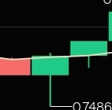
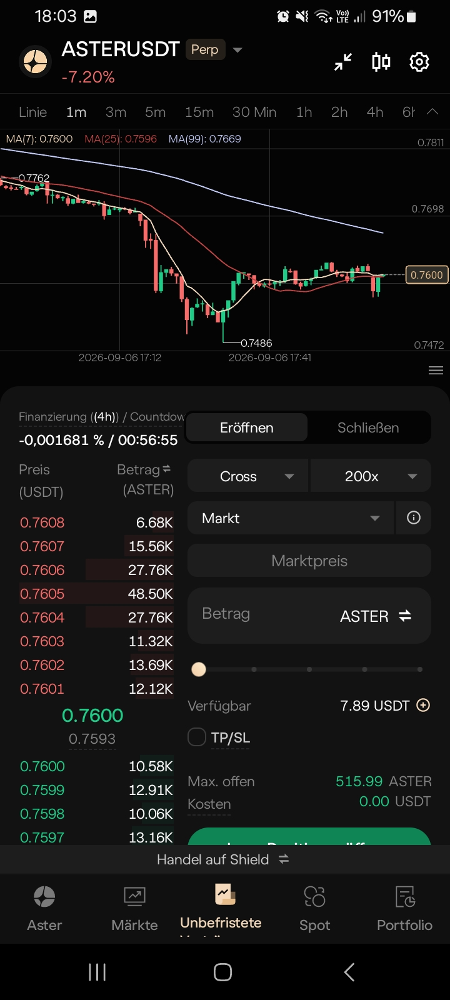
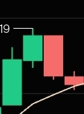
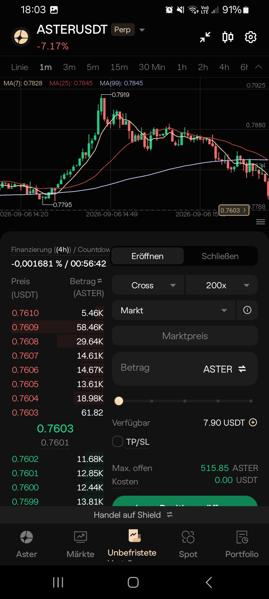

exit: „So sieht eine long liquidation aus im Chart“
Erklärung: Die rote Kerze mit langem unteren Docht zeigt, dass viele Long-Positionen zwangsweise geschlossen wurden. Der Kurs fällt abrupt bis zur Marke 0.7486, wo Stop-Losses und Margin Calls ausgelöst wurden. Das ist ein typisches Muster einer Liquidation Docht.


entry: „Hier sieht man im grünen wick, dass eine hoch gehebelte long eingestiegen ist“
Erklärung: Der grüne Kerzenkörper mit langem oberen wick zeigt, dass der Kurs kurz nach oben gedrückt wurde. Dort stiegen neue Longs mit hohem Hebel ein. Käufer absorbierten den Kaufdruck, sodass die Kerze grün schloss. Das Muster nennt man Liquidation Wick – schwache Hände sind in den Markt eingestiegen, dadurch wird der Kurs nach unten gezogen wie ein Stein.